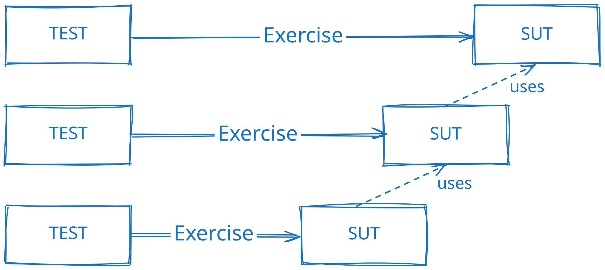
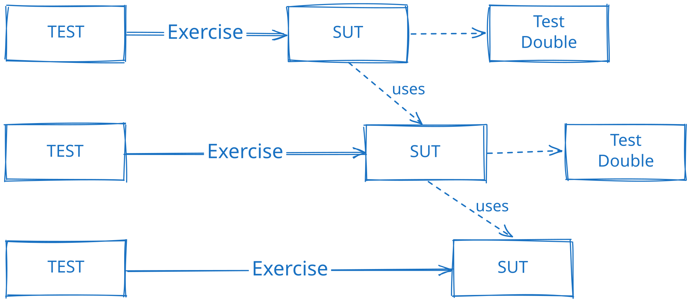

TDD w praktyce#
Inside-Out TDD#
Inside-Out TDD to podejście do tworzenia oprogramowania, które koncentruje się na budowaniu aplikacji od wnętrza na zewnątrz. Oznacza to, że najpierw piszesz i testujesz wewnętrzne komponenty i logikę biznesową, a następnie stopniowo przechodzisz do bardziej zewnętrznych warstw aplikacji, takich jak interfejs użytkownika czy integracje z zewnętrznymi systemami.
Etapy Inside-Out TDD#
Inside-Out TDD składa się z kilku kroków:
Definiowanie logiki biznesowej: Rozpoczynasz od zdefiniowania i przetestowania najważniejszych funkcji logiki biznesowej, które są sercem aplikacji. Skupiasz się na pisaniu testów jednostkowych dla poszczególnych funkcji.
Implementacja wewnętrznych komponentów: Po napisaniu testów jednostkowych i upewnieniu się, że są one nieudane (ponieważ nie ma jeszcze implementacji), przechodzisz do pisania kodu, który sprawi, że testy przejdą. Tworzysz i testujesz wewnętrzne komponenty aplikacji.
Refaktoryzacja kodu: Gdy wszystkie testy jednostkowe przechodzą, możesz przejść do refaktoryzacji kodu. Upewniasz się, że kod jest czytelny, utrzymywany w dobrym stanie i zgodny z najlepszymi praktykami programistycznymi.
Dodawanie warstw aplikacji: Stopniowo dodajesz kolejne warstwy aplikacji, takie jak interfejs użytkownika (UI) czy warstwa komunikacji z bazą danych. Każda z tych warstw jest testowana za pomocą odpowiednich testów integracyjnych i funkcjonalnych. Oznacza to, że testy klas warstw zewnętrznych nie są wykonywane w izolacji, ale korzystają z napisanych i przetestowanych klas warstw wewnętrznych.
Testowanie całości aplikacji: Na końcu, gdy wszystkie warstwy są zaimplementowane i przetestowane, przeprowadzasz testy całościowe (end-to-end), aby upewnić się, że aplikacja działa zgodnie z oczekiwaniami i spełnia wszystkie wymagania.
{kind=link}

Inside-Out TDD pomaga zapewnić, że kluczowa logika biznesowa jest solidna i dobrze przetestowana, zanim przejdziesz do bardziej zewnętrznych aspektów aplikacji. To podejście może być szczególnie przydatne w dużych projektach, gdzie wyodrębnienie i testowanie wewnętrznych komponentów na wczesnym etapie pomaga w lepszym zrozumieniu i utrzymaniu kodu.
Outside-In TDD#
Outside-In TDD (Test-Driven Development) to podejście do tworzenia oprogramowania, które koncentruje się na budowaniu aplikacji od zewnątrz do wewnątrz. Oznacza to, że zaczynasz od testowania i tworzenia warstw najbardziej oddalonych od jądra logiki biznesowej, takich jak interfejs użytkownika czy serwisy komunikujące się z zewnętrznymi systemami, a następnie stopniowo przechodzisz do bardziej wewnętrznych komponentów.
Etapy Outside-In TDD#
Zdefiniowanie wymagań na wysokim poziomie: Rozpoczynasz od zdefiniowania wymagań i scenariuszy użytkowania z punktu widzenia użytkownika końcowego lub klientów biznesowych. Te wymagania są często formułowane w postaci testów akceptacyjnych lub User Stories.
Pisanie testów akceptacyjnych: Tworzysz testy akceptacyjne, które sprawdzają, czy aplikacja spełnia zdefiniowane wymagania na wysokim poziomie. Testy te często obejmują testowanie interfejsu użytkownika i interakcji z zewnętrznymi systemami. Te testy długo będą w fazie RED, ponieważ nie ma jeszcze dla nich implementacji lub jest ona niekompletna.
Implementacja warstw zewnętrznych: Zaczynasz implementować zewnętrzne warstwy aplikacji, takie jak interfejs użytkownika, aby sprawić, że testy akceptacyjne przejdą. W miarę postępu implementacji napotykasz na brakujące elementy wewnętrznych warstw aplikacji. Te brakujące elementy są zastępowane obiektami pozorującymi (Test Doubles), które pozwalają na testowanie warstw zewnętrznych w izolacji.
Pisanie testów jednostkowych i integracyjnych: W miarę identyfikowania brakujących wewnętrznych komponentów, piszesz testy jednostkowe i integracyjne dla tych komponentów. Testy jednostkowe sprawdzają, czy poszczególne funkcje działają poprawnie, a testy integracyjne weryfikują, czy różne komponenty współpracują ze sobą.
Implementacja logiki biznesowej: Tworzysz kod, który realizuje logikę biznesową i sprawia, że testy jednostkowe i integracyjne przechodzą. W miarę postępu prac, wewnętrzne komponenty aplikacji stają się coraz bardziej kompletne.
Refaktoryzacja i testowanie całościowe: Na końcu, gdy wszystkie warstwy są zaimplementowane i przetestowane, przeprowadzasz refaktoryzację kodu oraz testy całościowe (end-to-end), aby upewnić się, że aplikacja działa zgodnie z oczekiwaniami i spełnia wszystkie wymagania.
{kind=link}

Outside-In TDD pozwala na szybkie dostarczanie funkcjonalności widocznych dla użytkownika końcowego, jednocześnie zapewniając, że wewnętrzne komponenty są dobrze przetestowane i zintegrowane. To podejście jest szczególnie przydatne w projektach, gdzie szybkie dostarczanie wartości dla użytkowników jest kluczowe.
Organizacja projektu TDD#
Organizacja projektu w podejściu TDD ma kluczowe znaczenie dla efektywnego tworzenia oprogramowania. Odpowiednie strukturyzowanie kodu, testów i zasobów projektu pomaga w utrzymaniu przejrzystości, łatwości testowania i skalowalności aplikacji.
Struktura katalogów#
Przykład struktury katalogów projektu TDD w języku C++:
project/
│
├── src/ # Library - source files
│ ├── include/ # Library - header files
│ │ └── calculator.hpp
│ ├── calculator.cpp
│ └── CMakeLists.txt
│
├── tests/ # Tests
│ ├── test_calculator.cpp
│ └── CMakeLists.txt
│
├── main.cpp # Main application
└── CMakeLists.txt
Biblioteka
calculator-libzawiera pliki źródłowe i nagłówkowe:./src/include/calculator.hpp- plik nagłówkowy z deklaracjami klas i funkcji#ifndef CALCULATOR_HPP #define CALCULATOR_HPP #include <vector> #include <string> int add(int a, int b); #endif
./src/calculator.cpp- plik źródłowy z definicjami funkcji#include "calculator.hpp" int add(int a, int b) { return a + b; }
./src/CMakeLists.txt- plik konfiguracyjny CMake dla bibliotekiset(PROJECT_LIB "${PROJECT_ID}_lib") set(PROJECT_LIB "${PROJECT_ID}_lib" PARENT_SCOPE) message(STATUS "PROJECT_LIB is: " ${PROJECT_LIB}) include_directories(include) file(GLOB SRC_FILES *.cpp *.c *.cxx) add_library(${PROJECT_LIB} STATIC ${SRC_FILES} ${SRC_HEADERS}) target_include_directories(${PROJECT_LIB} PUBLIC ${CMAKE_CURRENT_SOURCE_DIR} PUBLIC ${CMAKE_CURRENT_SOURCE_DIR}/include)
Katalog
testszawiera projekt testów jednostkowych:./tests/tests_calculator.cpp- plik z testami jednostkowymi#include <gmock/gmock.h> #include <gtest/gtest.h> #include <calculator.hpp> using namespace std; TEST(CalculatorTests, AddReturnsSumOfTwoArguments) { EXPECT_EQ(add(1, 2), 3); }
#include <algorithm> #include <string> #include <memory> #include <catch2/catch_test_macros.hpp> #include <calculator.hpp> TEST_CASE("Addition of two numbers", "[add]") { REQUIRE(add(1, 2) == 3); REQUIRE(add(0, 0) == 0); REQUIRE(add(-1, 1) == 0); REQUIRE(add(-1, -1) == -2); }
./tests/CMakeLists.txt- plik konfiguracyjny CMake dla testówset(PROJECT_TESTS "tests-${PROJECT_ID}" PARENT_SCOPE) message(STATUS "PROJECT_TESTS is: " ${PROJECT_TESTS}) #################### # GTest find_package(GTest) if (NOT GTest_FOUND) message(STATUS "GTest package not found! Trying to download it...") include(FetchContent) FetchContent_Declare( googletest URL https://github.com/google/googletest/archive/refs/tags/v1.16.0.zip DOWNLOAD_EXTRACT_TIMESTAMP ON) # For Windows: Prevent overriding the parent project's compiler/linker settings set(gtest_force_shared_crt ON CACHE BOOL "" FORCE) FetchContent_MakeAvailable(googletest) endif() enable_testing() #################### # Sources & headers file(GLOB SRC_FILES *.cpp *.c *.cxx) file(GLOB SRC_HEADERS *.h *.hpp *.hxx) add_executable(${PROJECT_TESTS} ${SRC_FILES} ${SRC_HEADERS}) target_link_libraries(${PROJECT_TESTS} ${PROJECT_LIB} GTest::gmock GTest::gtest_main) #################### # GTest discover tests include(GoogleTest) gtest_discover_tests(${PROJECT_TESTS})
set(PROJECT_TESTS "tests-${PROJECT_ID}") set(PROJECT_TESTS "tests-${PROJECT_ID}" PARENT_SCOPE) message(STATUS "PROJECT_TESTS is: " ${PROJECT_TESTS}) #################### # Sources & headers aux_source_directory(. SRC_LIST) file(GLOB HEADERS_LIST "*.h" "*.hpp") find_package(Catch2 3 REQUIRED) if (NOT Catch2_FOUND) Include(FetchContent) FetchContent_Declare( Catch2 GIT_REPOSITORY https://github.com/catchorg/Catch2.git GIT_TAG v3.8.0 # or a later release ) FetchContent_MakeAvailable(Catch2) list(APPEND CMAKE_MODULE_PATH ${catch2_SOURCE_DIR}/extras) endif() enable_testing() include(Catch) add_executable(${PROJECT_TESTS} ${SRC_LIST} ${HEADERS_LIST}) target_link_libraries(${PROJECT_TESTS} PRIVATE Catch2::Catch2WithMain ${PROJECT_LIB}) catch_discover_tests(${PROJECT_TESTS})
Aplikacja główna
main.cpp:./main.cpp- plik z kodem aplikacji#include <iostream> #include "calculator.hpp" int main() { std::cout << "1 + 2 = " << add(1, 2) << std::endl; return 0; }
Plik konfiguracyjny CMake dla całego projektu:
cmake_minimum_required(VERSION 3.20) set(PROJECT_ID "calculator") project(${PROJECT_ID}) message(STATUS "PROJECT_ID is: " ${PROJECT_ID}) add_subdirectory(src) add_subdirectory(tests) #################### # Packages & libs find_package(Threads REQUIRED) #################### # Main app add_executable(${PROJECT_MAIN} main.cpp) target_link_libraries(${PROJECT_MAIN} PRIVATE ${PROJECT_LIB} ${CMAKE_THREAD_LIBS_INIT}) target_compile_features(${PROJECT_MAIN} PUBLIC cxx_std_20)